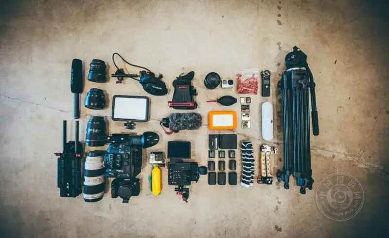
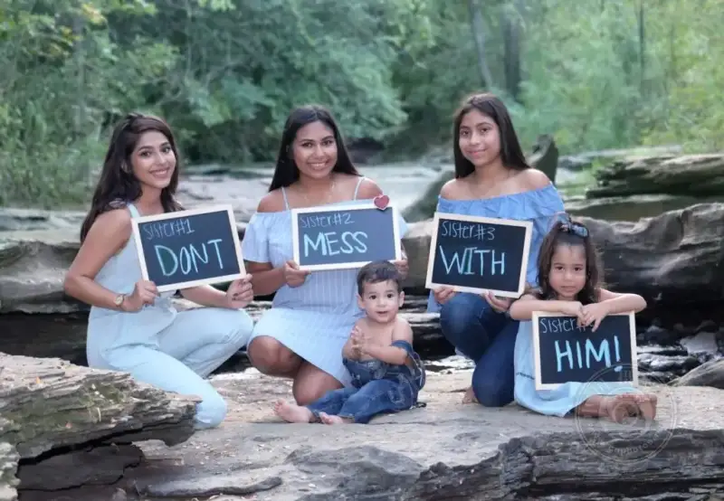
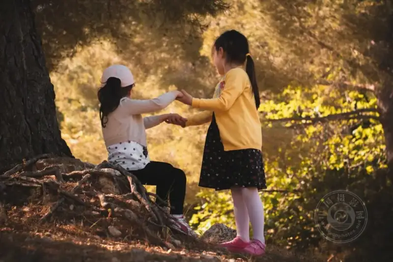
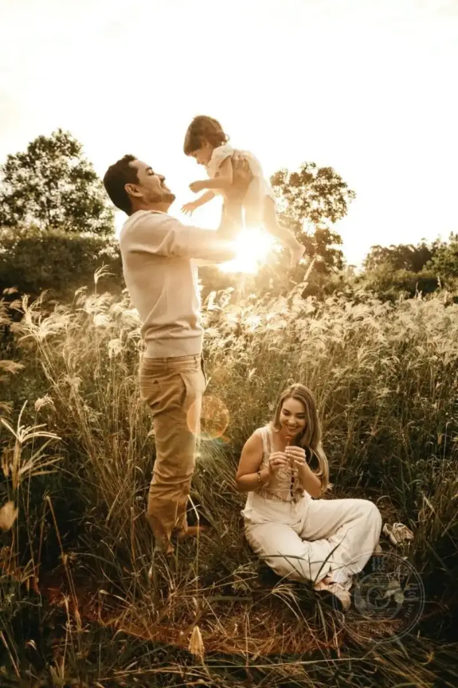
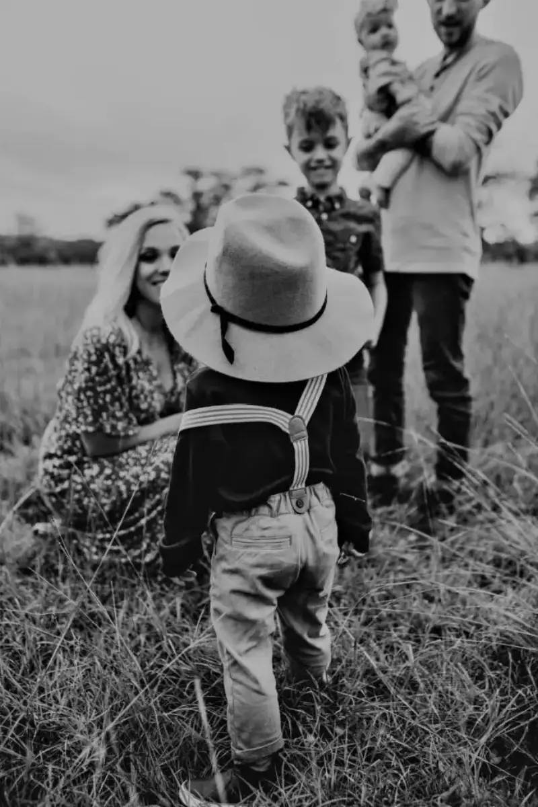

Some people say that a family photo shoot is an adventure. With so many photos that can catch a perfect moment, why take a set of family photos at all?
The children may be noisy, the family may not get along, or someone may be late. But for each of us and each family, it is very valuable and meaningful to keep some images of everyday family life.
1. Choose the right gear

◎ Photographer: Jakob Owen
When you do a family shoot, especially if you have no assistant, you need to make sure you have the basic gear.
Extra batteries are a must, no doubt about it. Most photographers carry spare batteries, but it is easy to forget them.
The lens you choose depends on where you shoot. If you know the shoot will be outdoors only, a long lens is best. If you shoot at home or indoors, a shorter lens helps make up for the limits of a small space.
A tripod is not required, but it can help for still shots. A tripod lets you step back and position the family better, without moving the camera and wasting time searching for the right angle. It also makes it easier to set the focus so you get a sharp image.
For indoor shoots, you can use a flash or a softbox. A little extra light at a family gathering is never a bad idea. Adding more light to the scene helps you catch the fast moves of children on the run. Do not pick something large and heavy. A folding softbox or small lights that fit easily where you shoot are best.
Filters help you shoot in poor lighting. Start with the basic three: a neutral density filter, a UV filter for outdoor shots, and a polarizing filter. Again, these may not be necessary, but they help a great deal when you are in a tricky setting that is hard to shoot.
2. Prepare a shot list and the questions to think about

◎ Photographer: Avigail Alfaro
What should they wear for the shoot? How do you make them feel more at ease? What if the shoot is outdoors but the weather turns bad? How do you keep a playful child happy? You should plan answers to common questions ahead of time. This lets your subjects feel confident and relaxed about the coming shoot.
Reach out to the family before the shoot. Give them tips to help it go smoothly. Tell them what to wear. Let them know which colors look best in the images and which colors to avoid. For example, a white shirt can cause overexposure in your image.
Then ask them to bring props, keepsakes, and items they want to use in their images.
Finally, list the best poses you have on hand. It is easy to forget great poses, especially if you are new to family photos. You can simply sketch where each person stands.
Prepare a shot list and think ahead about the obstacles you may meet. This helps you solve problems.
3. Catch the wonderful moments

◎ Photographer: Artur Aldyrkhanov
Children are children, and the best images you can catch are these fleeting moments. Let the kids chase each other, blow bubbles, or jump into a pile of leaves, and shoot as they play. Do not forget to catch the sweet time when mom and dad are with their children. Even covered in mud, these wonderful moments are what make a family a family. When you help them freeze these moments, they will value the images even more.
4. Give the family plenty of praise

◎ Photographer: Jonathan Borba
Many family members feel nervous when the camera comes out. They worry about how they look, how the children behave, and how long the chaos will last. Help them relax with plenty of praise, and you will get a more honest expression from each person. Show them some of the shots you took so they can feel at ease.
5. Post-processing

◎ Photographer: Jessica Rockowitz
The shoot is over, but the work is far from done. How you edit the captured images has a huge effect on the final result.
Converting to black and white can help save most images that are overexposed, underexposed, or even a little out of focus.
Do not edit too much. We want to enhance the images, not change them completely. A simple color correction, removing an object that wandered into the scene, fixing a reflection in glasses, or bringing out the color in the eyes are small changes that can make a big difference.